Submit your assignment at the administrative counter.
Students are advised to underpin their answers with the use of references (cited using the Harvard Name System of Referencing).
Late submission will be awarded zero (0) unless Extenuating Circumstances (EC) are upheld.
Cases of plagiarism will be penalized.
The assignment should be bound in an appropriate style (comb bound or stapled).
Where the assignment should be submitted in both hard copy and soft copy, the soft copy of the written assignment and source code (where appropriate) should be on a CD in an envelope / CD cover and attached to the hard copy.
You must obtain 50% overall to pass this module.
Marking Grid
Group Component (50%)
Fully
Partially
Not
Performance Criteria
Pass (20 - 29 marks)
Program execution
Module integration
Between 50% - 65% of the system’s modules are coded
Build a ferry ticketing system for a ferry company.
The company has 8 ferries. Each ferry has an unique ID:
001
002
003
004
005
006
007
008
Each ferry has 50 seats. 10 seats for business class, 40 seats for economy class.
There are two routes:
Penang to Langkawi
Langkawi to Penang
Ferries depart at following 8 times:
10am
11am
12pm
1pm
2pm
3pm
4pm
5pm
This system can sell ferry ticket to customer.
This system can print ticket for customer.
This system can show seating arrangement of a ferry.
Assumptions
This section is about those requirements and info which are not given in the instruction but are needed to implement this system.
The Ferry Ticketing System is designed for the ferry ticket counter staffs. There are few features added to the system for the staffs to cope with any situation.
The staffs can select the seats either manually or automatically depending on the customers’ demands.
The staffs can select seats in bundle depending on the seat availability.
The staffs can reprint the customers’ tickets using the search engine provided.
The staffs view customers’ purchase details in the seating arrangement section.
The staffs can quickly check the seat availability in the purchase ticket section.
There are only 8 ferries, each with unique ferry ID in the system. At 10am, 4 ferries will depart Penang to Langkawi and another 4 ferries will depart from Langkawi to Penang. These ferries will travel back and forth at every one-hour intervals from 10am to 5pm.
Times
Ferry 001 to 004
Ferry 005 to 008
10am
Penang to Langkawi
Langkawi to Penang
11am
Langkawi to Penang
Penang to Langkawi
12pm
Penang to Langkawi
Langkawi to Penang
1pm
Langkawi to Penang
Penang to Langkawi
2pm
Penang to Langkawi
Langkawi to Penang
3pm
Langkawi to Penang
Penang to Langkawi
4pm
Penang to Langkawi
Langkawi to Penang
5pm
Langkawi to Penang
Penang to Langkawi
Besides that, the system only allows the staffs to sell ferry tickets that have date within 7 days from today. The system will automatically record the purchase data of each tickets and store them in a file according to the date. For example, the data of the ferry tickets of 2018-12-31 will be stored in a file named data-2018-12-31.json.
System Features
This section is about features added to the system that are not specified in the instruction.
Customer can choose seats manually, or can let computer auto-assign seats. When customers select their seats manually, the seating chart will be shown and passengers are able to choose ferry and seats (able to purchase multiple tickets); if passengers select auto-assign, then customers need to choose number of tickets to buy. After selecting tickets, they need to enter the name of passenger for every ticket.
This system can sell tickets for one week time.
This system can view passenger info, given seat number or customer name. Bought ticket can be reprinted.
Data will be stored, that means data will be retained after system restart.
There is a limit of trial for invalid input. It will return to main menu if that limit is reached.
User is able to go back to previous step, and able to return to main menu, at any step.
List of steps from main menu step to current step will be shown at each page.
Data Design
This section is about the format of data. This is the format of data variable in the code, and the format of content saved in the file.
Each file stores data for a day. E.g. data_2018-12-01.json.
Each day has 8 times, with the following indexes:
0: 10am
1: 11am
2: 12pm
3: 1pm
4: 2pm
5: 3pm
6: 4pm
7: 5pm
Each time has 8 ferries, with the following indexes:
Index
Ferry ID
Route
If time index is even
If time index is odd
0
001
005
Penang to Langkawi
1
002
006
2
003
007
3
004
008
4
005
001
Langkawi to Penang
5
006
002
6
007
003
7
008
004
Each ferry has 50 seats, indexed from 0 to 49.
Each seat can either be null or object containing:
Name (string)
Purchased date and time (timestamp, integer)
Flow Design
This section is about flow of using the system. A simplified format of flowchart is used here, because the original flowchart format is too detailed and too long. The flowchart and pseudocode should be used to show an overall view of the system, or a rough idea about certain part of the system. There is no point for translating the entire python source code into flowchart or pseudocode. That level of verbosity will not help anyone to get a big picture of the system. And if anyone want to look into that level of details, source code will serve the purpose better.
Main
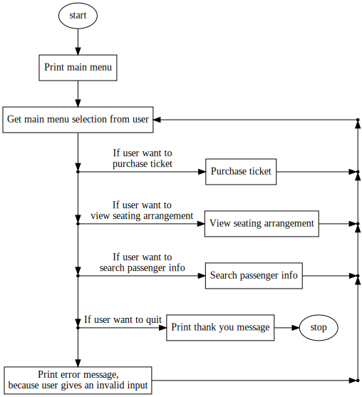
Figure 1: Main Flow
Purchase Ticket
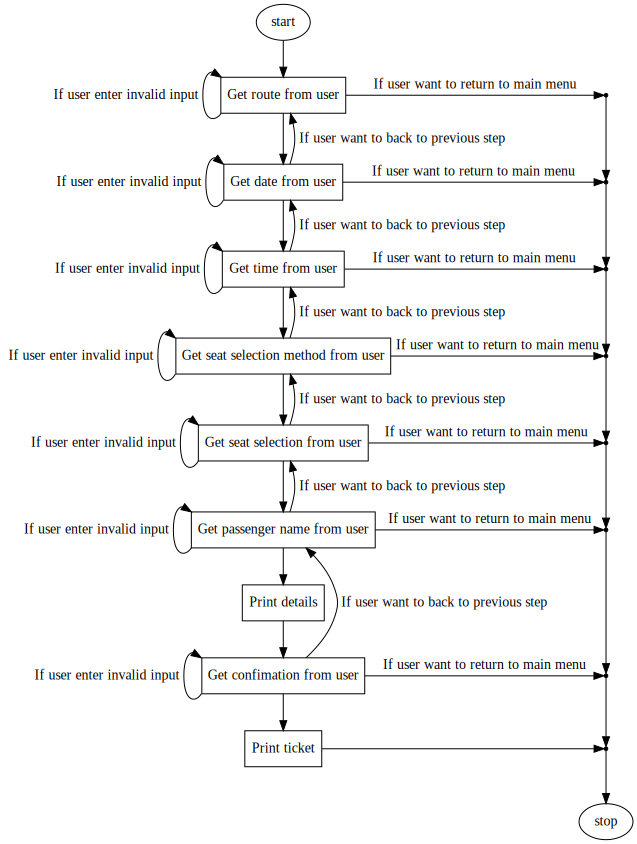
Figure 2: Purchase Ticket
View Seating Arrangement
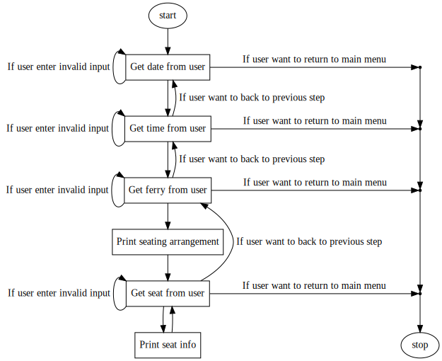
Figure 3: View Seating Arrangement
Search Passenger Info
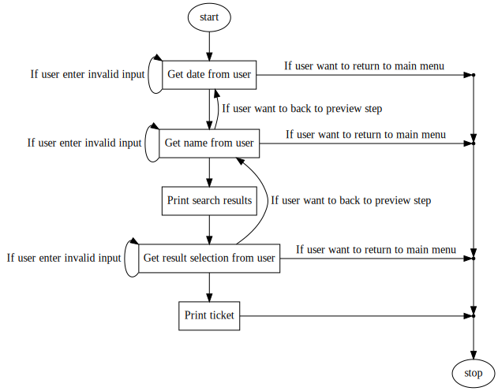
Figure 4: Search Passenger
Architectural Design
This section is about the system architecture.
Based on the flow design, it makes sense to write each step as a function. The question is, how to combine all these steps to form our system. Here is trivial architecture design:
PROGRAM
print_main_menu()
LOOP
get_main_menu_selection_from_user()
IF user_want_to_purchase_ticket THEN
get_route_from_user()
get_date_from_user()
get_time_from_user()
# ...
ELSE IF user_want_to_view_seating_arrangement THEN
# ...
ELSE IF user_want_to_search_passenger_info THEN
# ...
ELSE IF user_want_to_quit THEN
BREAK LOOP
ELSE
# User give an invalid input
print_error_message()
ENDIF
ENDLOOP
print_thank_you_message()
ENDPROGRAM
Let us focus on the first 3 steps purchasing ticket:
This method is simple, but it does not support going back to previous step. To support it, loops need to be added:
LOOP
get_route_from_user()
IF user_want_to_back_to_previous_step THEN
BREAK LOOP
ENDIF
LOOP
get_date_from_user()
IF user_want_to_back_to_previous_step THEN
BREAK LOOP
ENDIF
LOOP
get_time_from_user()
IF user_want_to_back_to_previous_step THEN
BREAK LOOP
ENDIF
# ...
ENDLOOP
ENDLOOP
ENDLOOP
And to support option to return to main menu on each step, multiple breaks are needed:
break_until_the_end = FALSE
LOOP
get_route_from_user()
IF user_want_to_back_to_previous_step THEN
BREAK LOOP
ENDIF
IF user_want_to_return_to_main_menu THEN
break_until_the_end = TRUE
BREAK LOOP
ENDIF
LOOP
get_date_from_user()
IF user_want_to_back_to_previous_step THEN
BREAK LOOP
ENDIF
IF user_want_to_return_to_main_menu THEN
break_until_the_end = TRUE
BREAK LOOP
ENDIF
LOOP
get_time_from_user()
IF user_want_to_back_to_previous_step THEN
BREAK LOOP
ENDIF
IF user_want_to_return_to_main_menu THEN
break_until_the_end = TRUE
BREAK LOOP
ENDIF
# ...
IF break_until_the_end THEN
BREAK LOOP
ENDIF
ENDLOOP
IF break_until_the_end THEN
BREAK LOOP
ENDIF
ENDLOOP
IF break_until_the_end THEN
BREAK LOOP
ENDIF
ENDLOOP
This is cumbersome. First, there are too many levels of nesting, which is hard to read. Second, the logic for checking intention of user is repeating, which violate the DRY (Don't Repeat Yourself) principle. Is there a better way? Is there a way to factor out those repeating lines?
Yes, there is.
A pattern can be observed from the code above:
do_a_step()
IF user_want_to_back_to_previous_step THEN
go_to_previous_step()
ELSE IF user_want_to_return_to_main_menu THEN
go_to_first_step() # The main menu step
ELSE
go_to_next_step()
ENDIF
To implement that pattern, a list of steps can be created, and an index can be used to keep track of current step. After current step is done, index can be modified based on result of current step, and the corresponding step will be executed:
steps = list(
main_menu,
get_route_from_user,
get_date_from_user,
get_time_from_user,
...
)
i = 0
LOOP WHILE i >= 0
current_step = steps[i]
current_step()
IF user_want_to_back_to_previous_step THEN
i = i - 1
ELSE IF user_want_to_return_to_main_menu THEN
i = 0
ELSE
i = i + 1
ENDIF
ENDLOOP
With this architecture, operation common for all steps can be added easily, such as printing a step list from main menu to current step. To make it more flexible, the steps list can be passed into each step, so that the list can be modified inside a step. To enable communication between steps, a context variable can be passed into each step.
PROGRAM
steps = list(main_menu)
context = dictionary()
i = 0
LOOP WHILE i >= 0
current_step = steps[i]
current_step(steps, context)
IF user_want_to_back_to_previous_step THEN
i = i - 1
ELSE IF user_want_to_return_to_main_menu THEN
i = 0
ELSE
i = i + 1
ENDIF
ENDLOOP
ENDPROGRAM
Sample Output
Starting Page
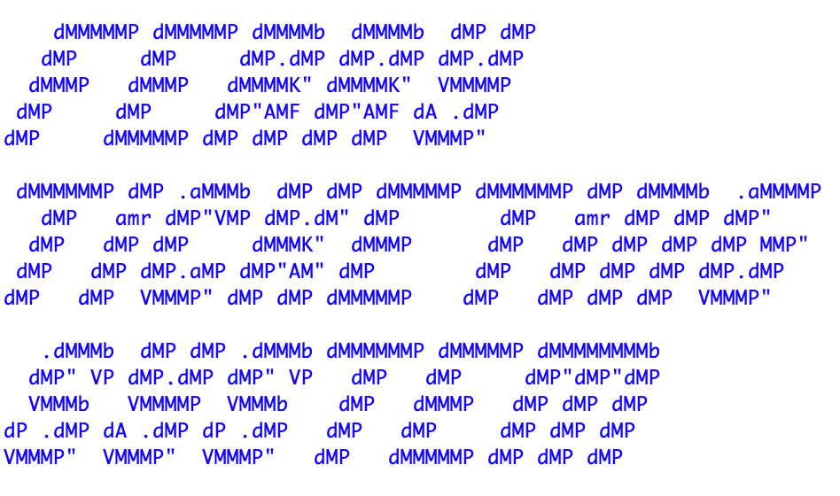
When the system starts, the starting page will show up.
Main Menu
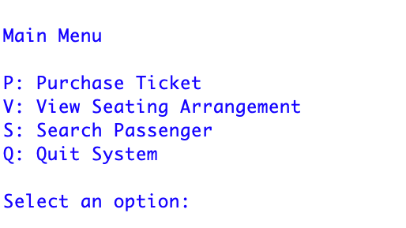
After the starting page shows up, the main menu page will be prompted. User is required to input the desired option.
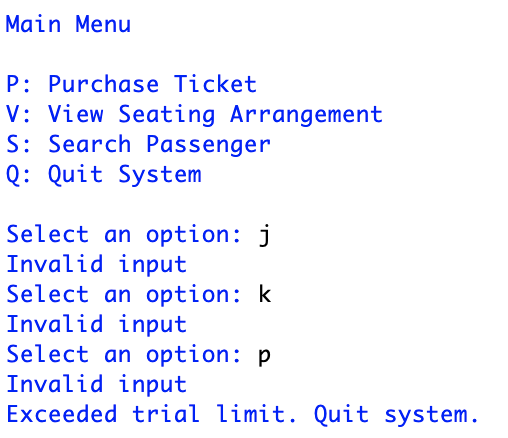
Error
If the user key in the wrong input, 3 trials are given to the user to key in correctly. If all 3 trials are exceeded, an error message is prompted, then the system will quit itself.
Purchase Ticket
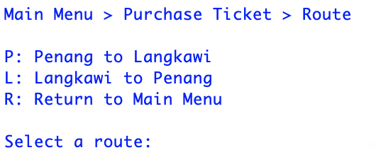
Route Selection Page
After the user input P in the main menu, the route selection page will be prompted. User is required to choose which route to travel.
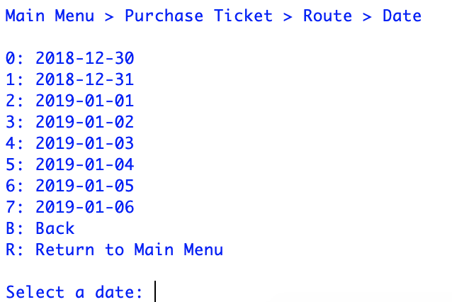
Date Selection Page
After the user choose the route, the date selection page will be prompted. User is required to choose which date to travel.
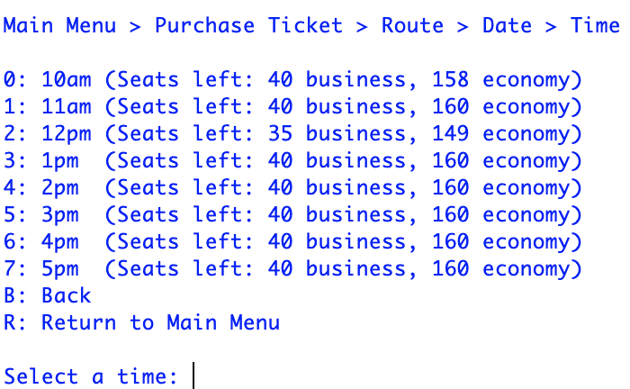
Time Selection Page
After the user choose the date, the time selection page will be prompted. User is required to choose which time to travel. In this page, user can quickly check the seats availability for each trip time.
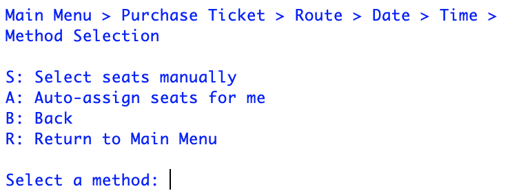
Method Selection Page
After the user choose the time, the method selection page will be prompted. User is required to choose which method to use to select the seats.
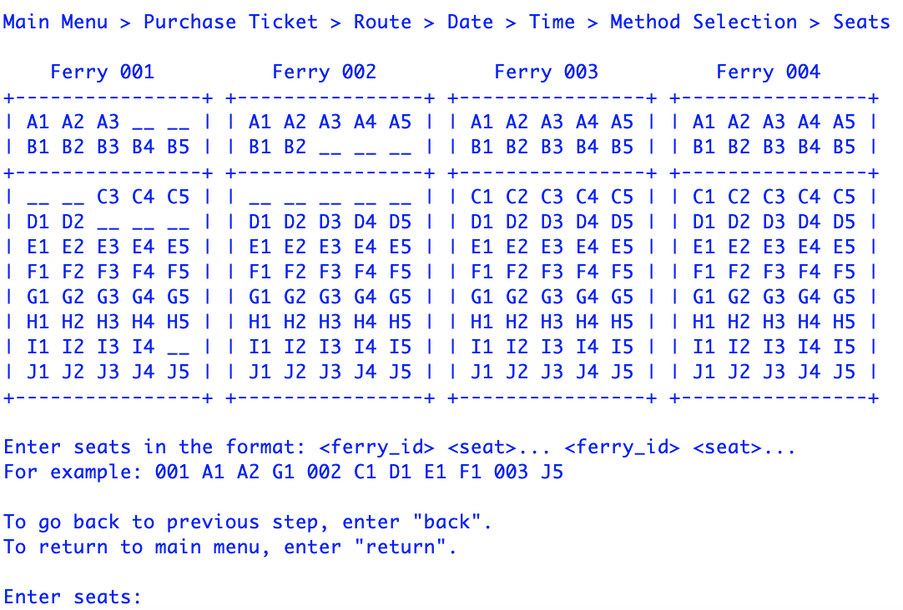
Manual Seat Selection Page
If the user chooses to select seats manually, this manual seat selection page will be prompted. User is required to key in desired seats that are available.
A1 to B5 is business class.
C1 to J5 is economy class.
If that particular seat is not available, seat number will be replaced with __.
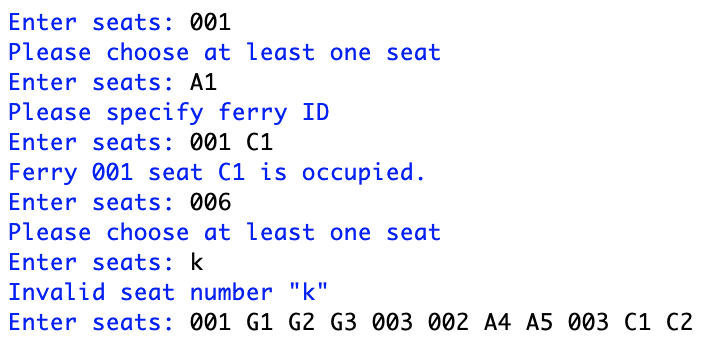
A proper error message will be shown according to 5 scenarios:
If the user only key in ferry ID
If the user only key in seat number
If the user key in the occupied seat number
If the user key in ferry ID that is not available
If the user key in invalid input
The system will keep asking user to key in seat number until the inputs are correct.
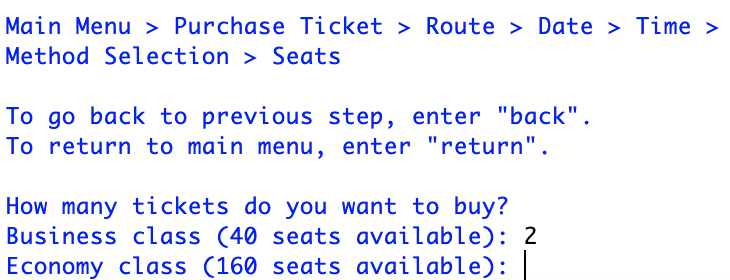
Auto Seat Selection Page
If the user chooses to select seats automatically, this auto seat selection page will be prompted. User is required to key in desired number of business class seats and economy class seats.
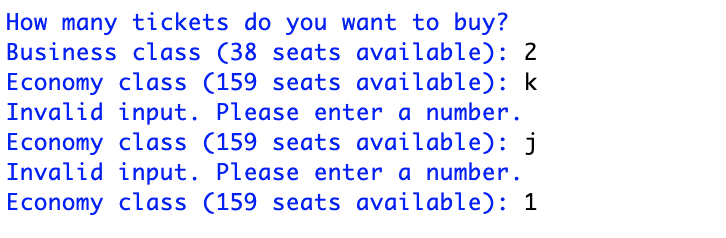
Error
If the user key in an invalid input, an error message is prompted. The system will keep asking user to key in until the inputs are correct.
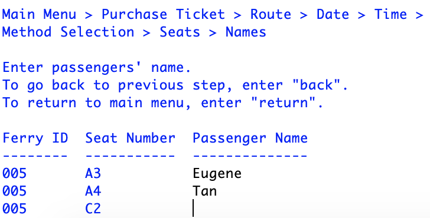
Passenger Name Page
After the user finish choosing the seats, the passenger name page will be prompted. User is required to key in the passenger’s name for each seats selected from the seat selection page.
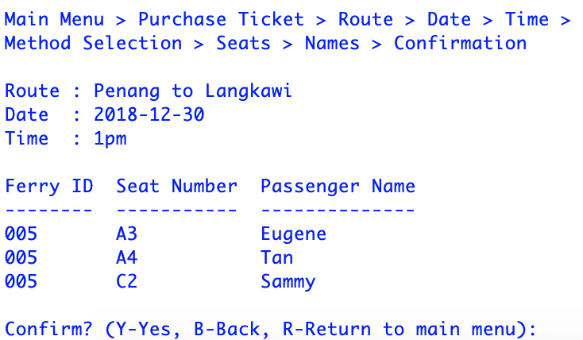
Confirmation Page
After the user finishes entering the passengers’ names, the confirmation page will be prompted. User is required to check whether the details are correct.
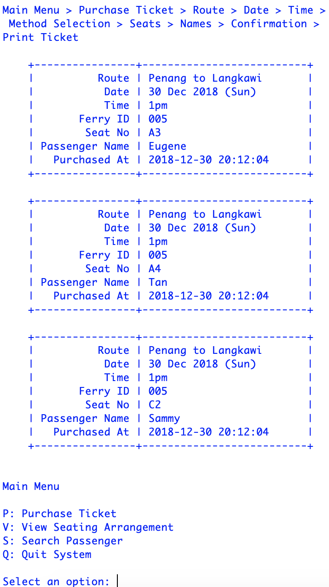
Printing Page
After user had confirmed all the details are corrected, this printing page will be prompted, and the customer’s ticket will be printed out. The system will automatically return to main menu.
View Seating Arrangement
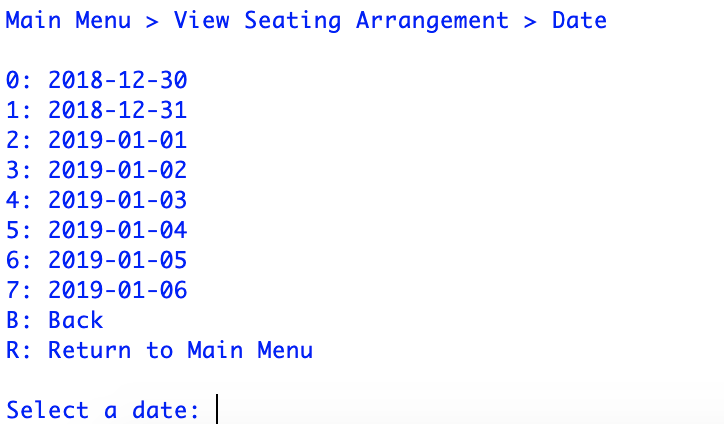
Date Selection Page
After the user input V in the main menu, the date selection page will be prompted. User is required to choose which date to view the seating arrangement.
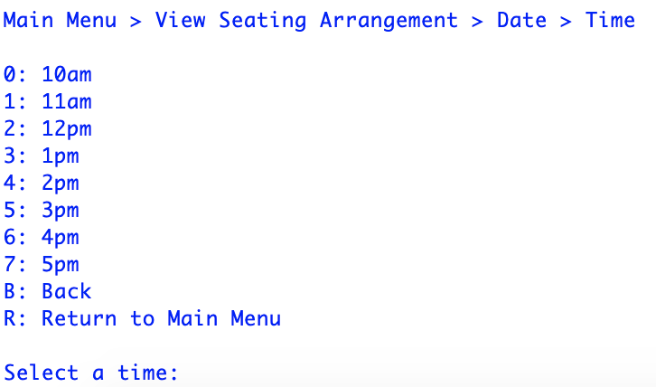
Time Selection Page
After the user input the date, the time selection page will be prompted. User is required to choose which trip time to view the seating arrangement.
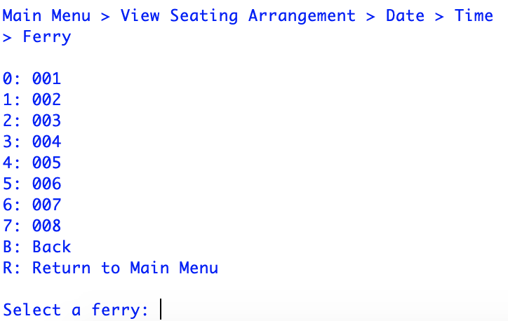
Ferry ID Selection Page
After the user input the trip time, the ferry ID selection page will be prompted. User is required to choose which ferry ID’s seating arrangement to view.
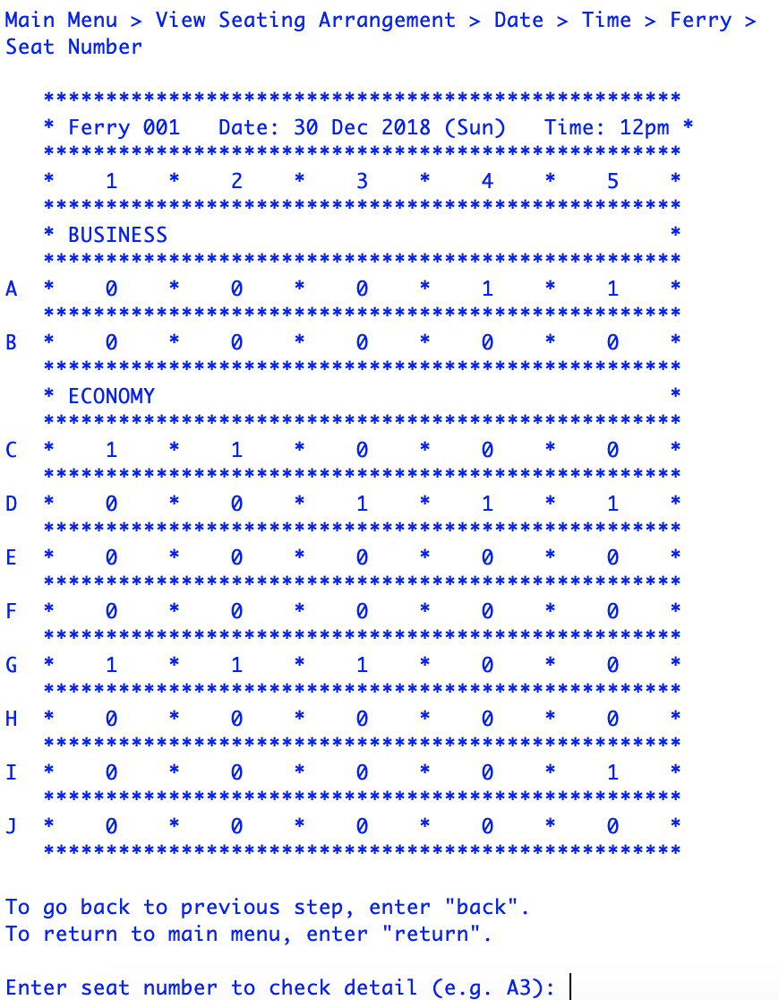
Seat Arrangement Page
After the user select the ferry ID, the seating arrangement of that particular ferry ID will be shown. User can either key in the seat number to check passenger’s details or go back to previous back or return to main menu.
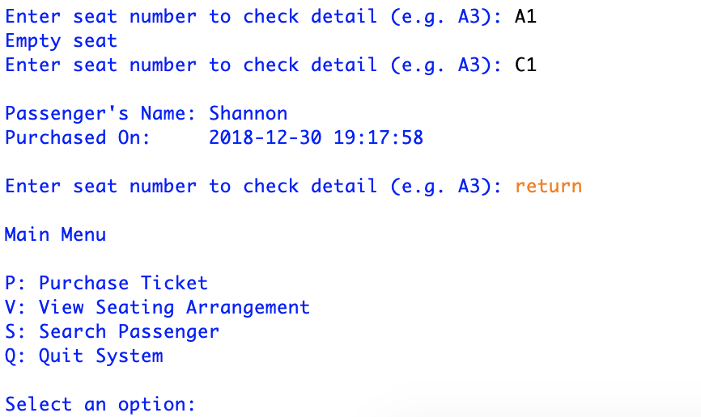
If the user input an empty seat, a proper message such as “Empty seat” will be shown.
If the user input an occupied seat, the purchase details of that passenger will be shown.
User can return to main menu by keying in return
Search Passenger
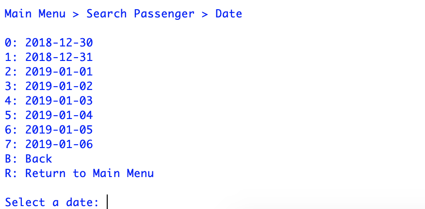
Date Selection Page
After the user input S in the main menu, the date selection page will be prompted. User is required to choose which date to search.
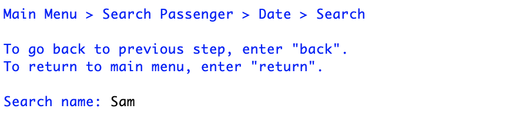
Name Search Page
After the user choose a date, the name search page will be prompted. User is required to enter the name for searching.
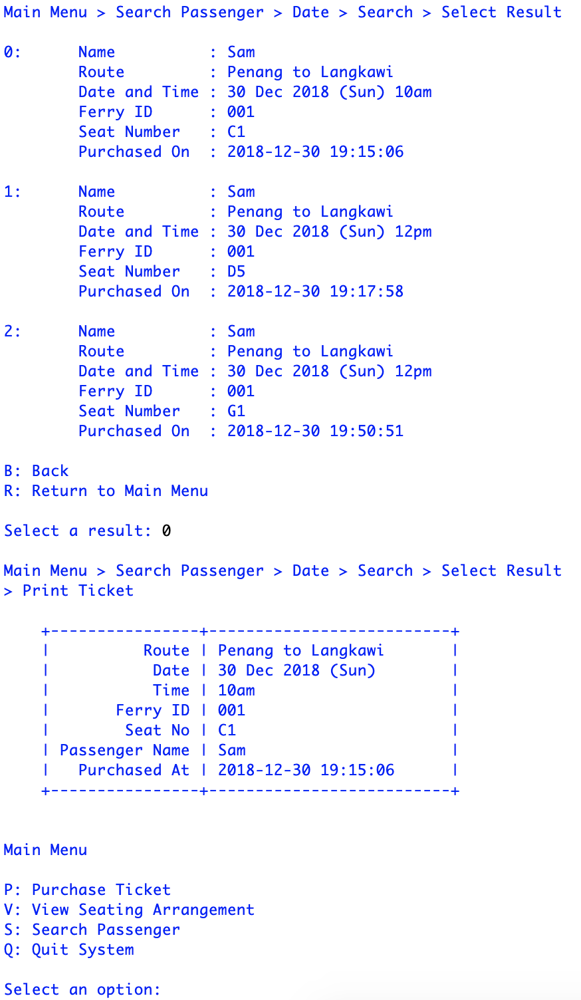
Select Result Page
After the user enter the name, if the name can be found in the passenger list, the details of that particular name will be shown. User can choose to reprint the tickets or back to previous page or return to main menu.
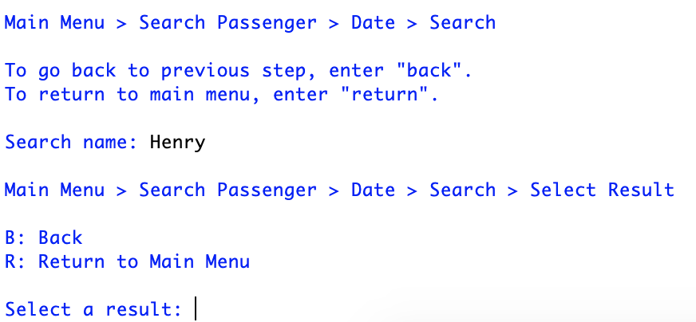
If the name searched is not in the passenger list, nothing will be shown.
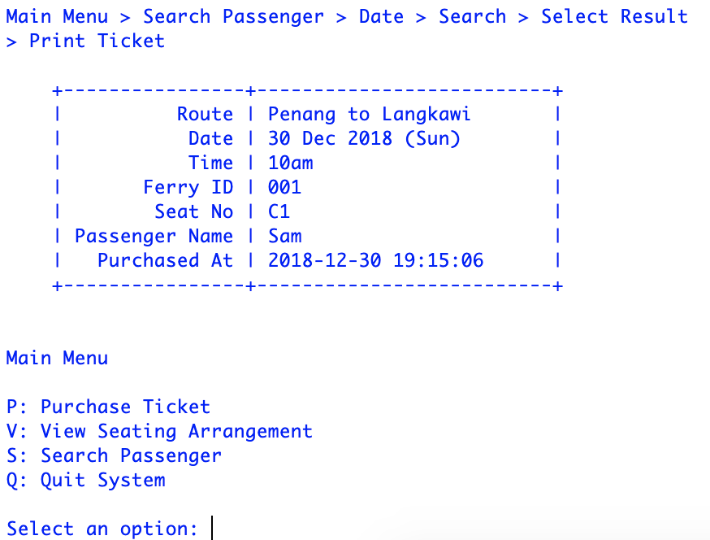
Printing Page
If the user chooses to reprint the ticket, the printing page will be prompted, the ticket will be printed out. The system will automatically return to main menu.
Quit Page
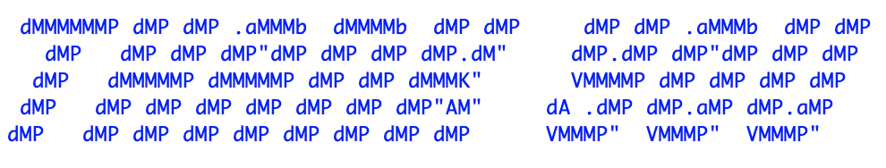
When the user input Q in the main menu or the system want to quit itself due to exceeding 3 trail limits, the quit page will be prompted indicating that the system has been shut down.
Error
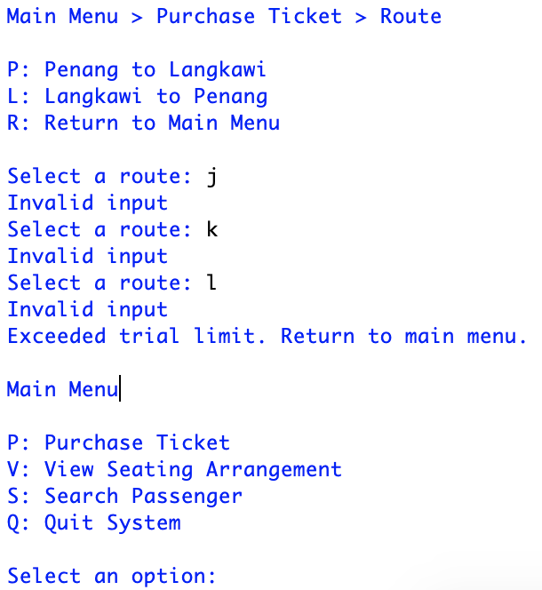
3 trials will be given if the user key in the wrong input in the following page:
Route Selection Page
Date Selection Page
Time Selection Page
Method Selection Page
FerryID selection page
Select Result Page
If the user still key in the wrong input after 3 times, the system will automatically return to main menu.
Additional Python Features Used
Language Features
List comprehension
List comprehension is a concise way to create a list. The basic syntax is
x = [expression for item in list if condition]
It is equivalent to
x = []
for item in list:
if condition:
x.append(expression)
For example, to create a list of 10 squared numbers start from zero:
squared_numbers = [x**2 for i in range(10)]
Module
In Python, function definitions can be put inside a file. That file is called a module. Module can be imported to be used in a script. For example, a module named my_module.py has the following content
def add(x, y):
return x + y
my_module.py can be imported to be used.
import my_module
print(my_module.add(5, 7))
Module helps programmers to organize their code for higher reusability.
Dictionary
Dictionary is a built-in data type of Python like list. It is called associative arrays in other languages. To access an element of a list, we need an index. To access an element of a dict, we need a key. Dictionary key can be any immutable type.
Dictionary can be created like this:
x = {'jack': 4098, 'sape': 4139, 'susan': 4359}
And can be accessed like this:
print(x['jack'])
String formatting
There is a str.format() method for string formatting.
'Hello, {}'.format('Lisa') # evaluate to 'Hello, Lisa'
It has several formatting syntax, such as specify width and alignment.
'| {: <5} | {: ^5} | {: >5} |'.format('a', 'b', 'c')
# evaluate to '| a | b | c |'
Built-in Functions
callable(x) test whether x is a function.
isinstance(x, type) test whether x is type of type.
enumerate(l) return a list of tuple of i and x, where i is index, and x is l[i]. Normally this function is used in for loop.
sum(l) return summation of all elements of list l.
Libraries
time module provides various time-related functions. time.time() will return number of seconds since epoch, also known as timestamp. time.localtime(timestamp) will convert a timestamp to time structure. time.strftime(format, time_structure) will convert a time structure to a string according to format given.
os module provides a portable way of using operating system dependent functionality. os.mkdir(directory, mode) can be used to create a folder.
os.path module provides some useful function on pathnames. os.path.isdir(x) check whether x is a directory. os.path.join(a, b, ...) will join one or more path component using operating system specific path separator.
datetime module supply classes for manipulating dates and times. datetime.date.today() will return today's date.
json module provide functions to parse variable from (json.load(f)) and to (json.dump(x, f)) string JSON data format.
References
Gillespie, P. (2018) Text to ASCII art generator (TAAG). [Online]. Available from: http://patorjk.com/software/taag/ [Accessed: 28 December 2018]
Python (2018) The Python standard library. [Online]. Available from: https://docs.python.org/3/library/index.html [Accessed: 30 December 2018]
Python (2018) The Python tutorial. [Online]. Available from: https://docs.python.org/3/tutorial/index.html [Accessed: 30 December 2018]